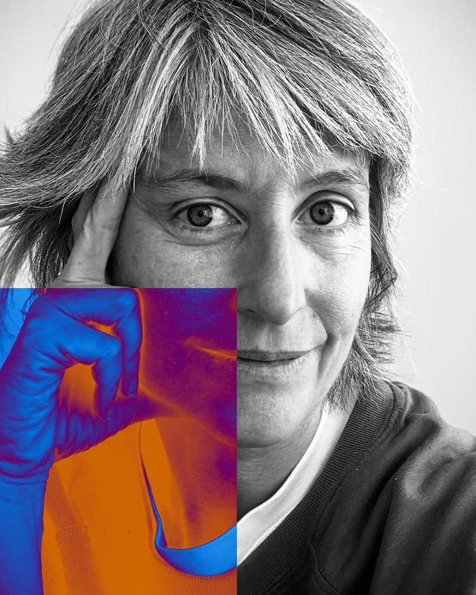
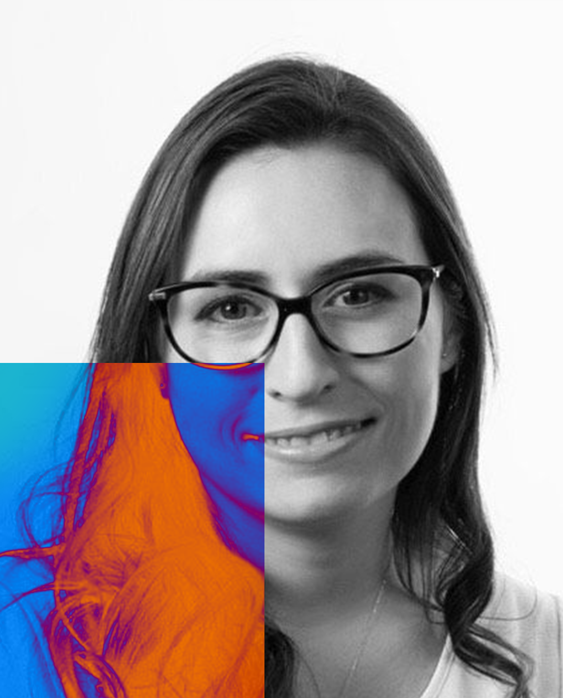
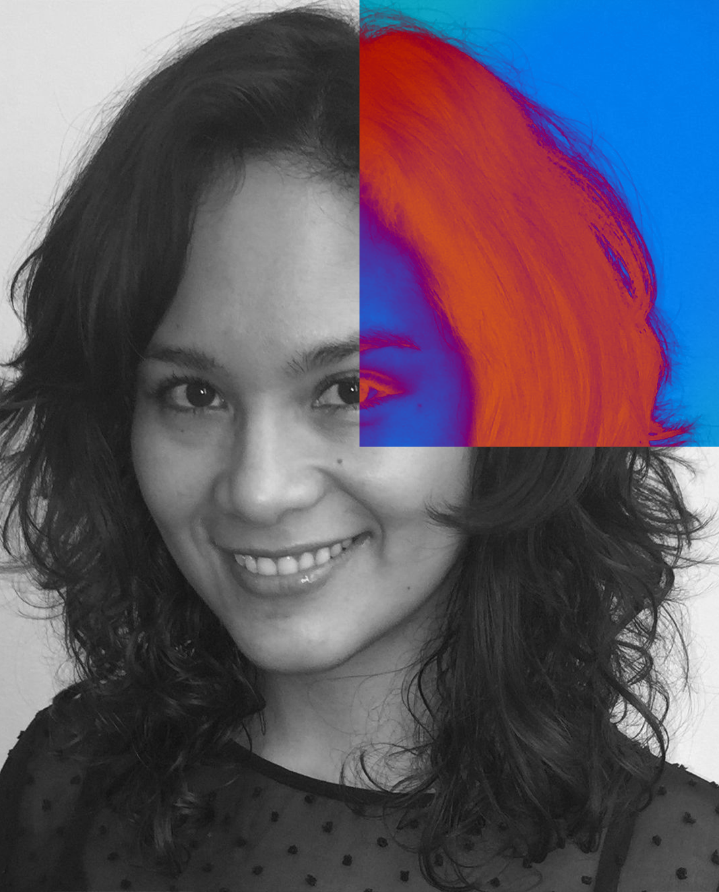
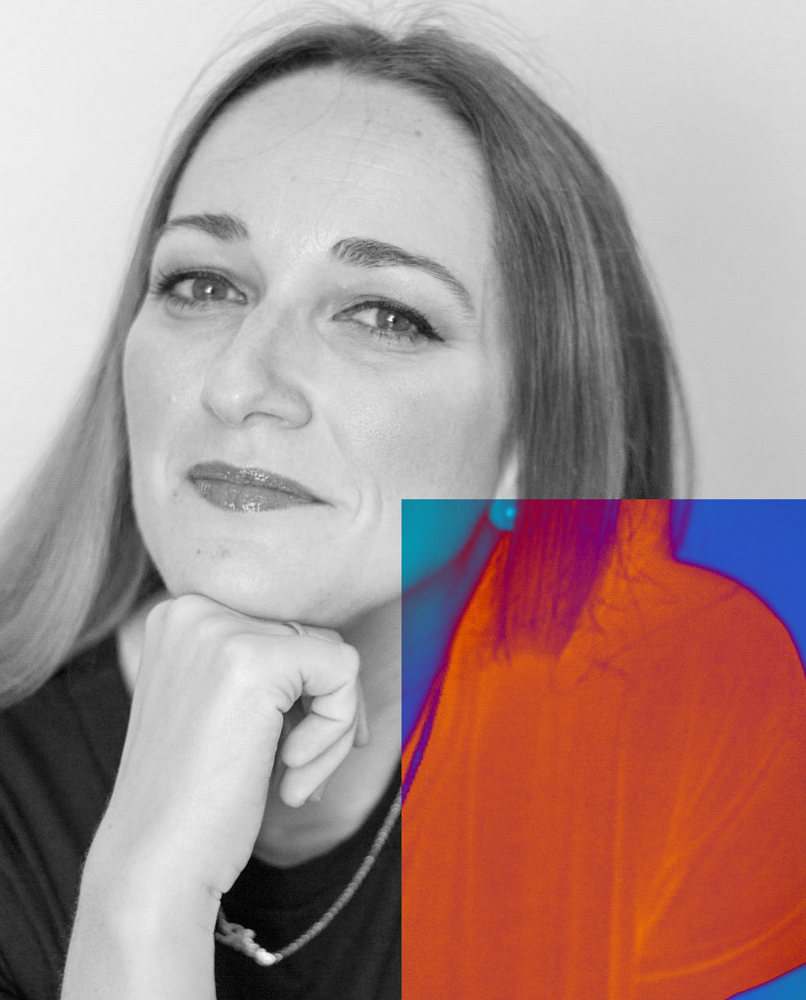
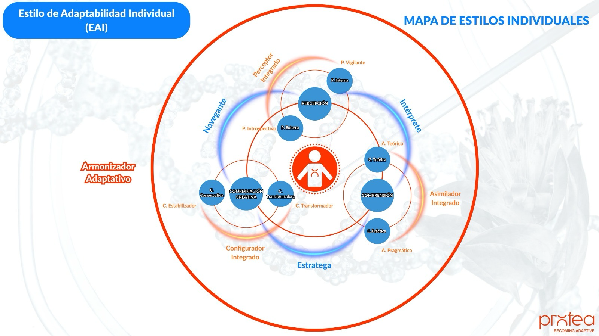
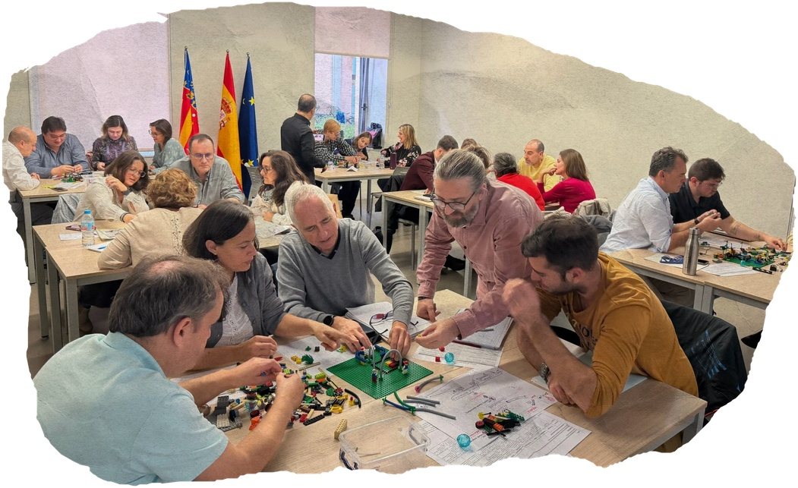
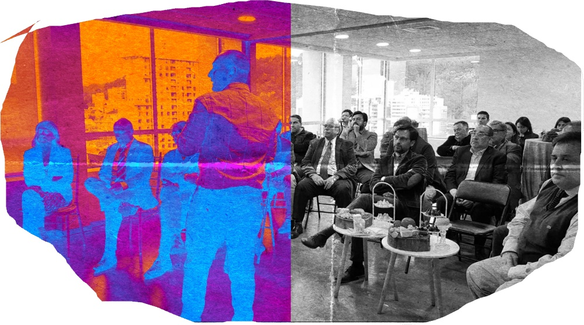
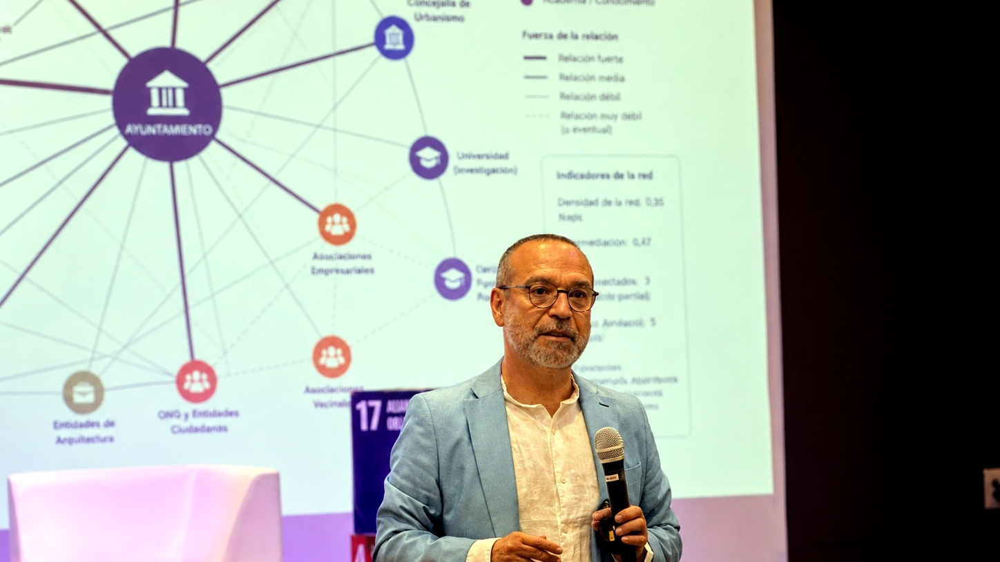
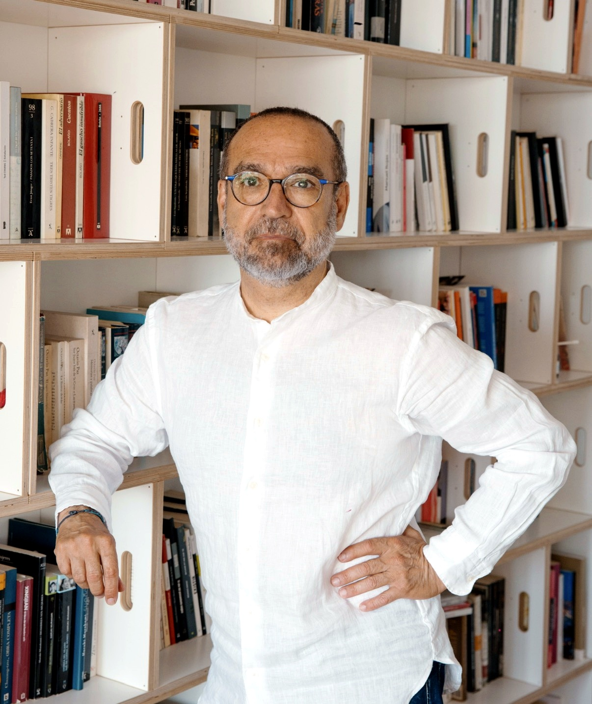

El origen
Comprender la complejidad y sus efectos sobre las organizaciones.
Adaptive Intelligence Agents
Ayudamos a organizaciones, equipos y líderes a cultivar las capacidades necesarias para sostener su vigencia, evitar la obsolescencia y prosperar en contextos complejos.
01 · Protea
Los problemas de una organización no siempre son lo que parecen. Cuando no consigue avanzar, rara vez le faltan talento, estrategia o innovación. Lo que suele fallar es su capacidad para percibir lo que cambia, aprender con suficiente rapidez y convertir ese aprendizaje en acción.
Protea ayuda a organizaciones, equipos y líderes a reconocer esas dinámicas y desarrollar las capacidades necesarias para sostener su vigencia, evitar la obsolescencia y prosperar en contextos complejos.
Nos denominamos agencia porque no sustituimos la capacidad de actuar de las organizaciones: la hacemos emerger, la fortalecemos y ampliamos sus posibilidades de acción.
Inteligencia adaptativa: percibir antes, aprender mejor y transformarse a tiempo.
Conoce el IAO →QUIÉNES SOMOS · LA HISTORIA DE PROTEA
Nacimos de una pregunta: ¿por qué algunas organizaciones evolucionan y otras se quedan atrás?
Protea nace de una convicción: las organizaciones no pierden vigencia porque les falten talento, estrategia o recursos, sino porque dejan de percibir lo que cambia, aprender con suficiente rapidez y transformar ese aprendizaje en nuevas formas de actuar.
Nuestra historia reúne décadas de experiencia en estrategia, innovación, aprendizaje y transformación organizacional. El trabajo con empresas e instituciones de España y América Latina nos permitió comprobar que los problemas visibles rara vez son el verdadero problema. Detrás de ellos suelen existir capacidades bloqueadas, inercias difíciles de reconocer y formas de organización diseñadas para un mundo que ya no existe.
De esa experiencia nació Becoming Adaptive, una manera de comprender, diseñar y acompañar la transformación de las organizaciones para que puedan conservar su vigencia en contextos complejos.
Hoy Protea integra diagnóstico, desarrollo de capacidades, experimentación y articulación de ecosistemas. No llegamos con respuestas prefabricadas: ayudamos a cada organización a comprender qué está ocurriendo, descubrir qué necesita movilizar y construir su propio recorrido de adaptación.
Comprender la complejidad y sus efectos sobre las organizaciones.
Convertir la adaptabilidad en una capacidad que puede observarse, desarrollarse y sostenerse.
Acompañar a organizaciones, equipos y ecosistemas que necesitan transformarse sin perder aquello que los hace valiosos.
Protea no trabaja para predecir el futuro, sino para que las organizaciones estén preparadas para construirlo.
EL EQUIPO
Protea reúne profesionales de la estrategia, las ciencias sociales, la psicología, la ingeniería, la filosofía, el derecho, la salud y el aprendizaje. La diversidad no es solamente una característica del equipo: es nuestra forma de comprender los problemas.
Fundador y director de Protea · Complejidad, estrategia y adaptabilidad
Las organizaciones no colapsan cuando cambia el entorno, sino cuando dejan de transformarse con él.LinkedIn ↗

Consultora asociada · Derecho y transformación institucional
Transformar una institución comienza por hacer visible aquello que sus rutinas han dejado de cuestionar.LinkedIn ↗

Consultora asociada · Salud, transformación digital y sistemas complejos
Los sistemas cambian cuando las personas pueden conectar conocimiento, experiencia y propósito.LinkedIn ↗
Consultor asociado · Ingeniería y filosofía de la ciencia
Comprender un sistema complejo no consiste en reducirlo, sino en descubrir las relaciones que le dan vida.LinkedIn ↗

Consultora asociada · Derecho, gestión pública y modernización institucional
La transformación se vuelve posible cuando las reglas dejan de proteger la inercia y comienzan a habilitar la acción.LinkedIn ↗

Consultora asociada · Talento, competencias y aprendizaje
Una organización aprende cuando las personas pueden convertir su experiencia en nuevas capacidades.LinkedIn ↗
No todos los problemas necesitan las mismas disciplinas ni las mismas respuestas. Protea configura equipos diversos según el contexto, combinando conocimiento especializado, experiencia práctica y capacidad de facilitación.
Trabajamos con las organizaciones, no desde fuera de ellas. Porque la transformación no se instala: se comprende, se experimenta y se construye juntos.
Conversemos →02 · Qué hacemos
BECOMING ADAPTIVE
Becoming Adaptive es el método con el que Protea ayuda a las organizaciones a comprender qué está limitando su respuesta, desarrollar nuevas capacidades y convertirlas en formas sostenibles de actuar.
¿Para qué? Para mantener su vigencia, impulsar procesos de transformación, integrar la inteligencia artificial con sentido, renovar su propuesta de valor, innovar con mayor impacto y responder a los cambios antes de que se conviertan en amenazas.
Realizamos estudios sobre capacidades adaptativas con foco en organizaciones, áreas, equipos y ecosistemas. Hacemos visibles las capacidades y fricciones que condicionan la respuesta ante presiones normativas, tecnológicas, competitivas, geopolíticas y de clientes. Su principal instrumento es el Índice de Adaptabilidad Organizacional (IAO).
La organización obtiene: una lectura estratégica compartida, prioridades claras y una hoja de ruta para actuar.
Conoce el IAO →
Entrenamos a personas, equipos y líderes para interpretar la complejidad, decidir con mayor criterio y actuar en condiciones de incertidumbre.
La organización obtiene: lenguaje compartido, nuevas prácticas y mayor autonomía para responder a los desafíos de transformación.
Programas: GYMNOS · Complexus · Innovation. Descripciones detalladas pendientes de validación editorial.
Trabajamos con los equipos sobre desafíos reales para diseñar, probar y mejorar soluciones antes de incorporarlas a la organización. Integramos complejidad del entorno, desarrollo de habilidades adaptativas y soluciones innovadoras.
La organización obtiene: evidencia, decisiones defendibles y soluciones capaces de arraigarse.

Conectamos actores, conocimiento y experiencias para sostener la cooperación, el aprendizaje y la transformación más allá de una intervención puntual.
La organización obtiene: coordinación, memoria compartida y capacidad para continuar evolucionando.

No todas las organizaciones necesitan las cuatro etapas ni las recorren de forma lineal. Protea comienza comprendiendo qué está ocurriendo y define desde ahí dónde intervenir.
Conversemos sobre tu desafío →03 · IAO
El IAO —Índice de Adaptabilidad Organizacional— hace visible cómo una organización anticipa los cambios, responde, aprende y evoluciona. Permite identificar sus capacidades, descubrir las fricciones que frenan su transformación y decidir dónde actuar primero.
Explora el IAO para tu organización →CUÁNDO UTILIZARLO
El IAO es especialmente útil cuando una transformación pierde impulso, la estrategia no consigue convertirse en acción, la innovación no arraiga, las áreas responden de manera fragmentada o la incorporación de inteligencia artificial exige nuevas formas de trabajar.
No mide solamente cómo funciona hoy la organización. Evalúa su capacidad para conservar la vigencia en un entorno que cambia.
QUÉ MIDE
Reconocer señales y prepararse para lo que emerge.
Responder con rapidez, coordinación y criterio.
Convertir la experiencia en conocimiento y nuevas capacidades.
Mantener vigente la propuesta de valor.
Fortalecerse y generar oportunidades ante la adversidad.
5 atributos · 21 variables
QUÉ RECIBE LA ORGANIZACIÓN
El IAO no termina en un informe. Convierte la medición en una hoja de ruta para desarrollar capacidad adaptativa.
CÓMO SE APLICA
El IAO puede aplicarse a empresas, instituciones públicas, universidades y ecosistemas, y configurarse según el alcance y el desafío de cada organización. Forma parte de DIAGNOS.
La adaptabilidad no se intuye. Se hace visible. Conocer la capacidad adaptativa permite anticipar vulnerabilidades, orientar la transformación y tomar mejores decisiones antes de que el cambio se convierta en urgencia.
IAO en acción: casos y aplicaciones anónimas pendientes de material aprobado.
Hablemos del IAO →04 · Conferencias

ADAPTIVE THINKING · MARCELO LASAGNA
Adaptive Thinking es una nueva forma de comprender, diseñar y transformar las organizaciones para desarrollar un ADN de longevidad: la capacidad de percibir lo que cambia, aprender con rapidez y evolucionar antes de quedar obsoletas.
Las conferencias de Marcelo Lasagna trasladan esta mirada a líderes y organizaciones mediante ideas claras, provocadoras y aplicables. Para convenciones, congresos, encuentros directivos, jornadas y programas de liderazgo.
Invita a Marcelo →Explora las conferencias ↓CONFERENCIA INSIGNIA
Las organizaciones rara vez colapsan de repente. Mucho antes comienzan a perder capacidad para percibir lo que cambia, aprender con suficiente rapidez y transformar ese aprendizaje en decisiones.
Basada en el libro ¿Por qué colapsan las organizaciones?, esta conferencia muestra cómo el éxito puede convertirse en rigidez, por qué la eficiencia no garantiza la vigencia y qué distingue a las organizaciones capaces de evolucionar sin perder su identidad.
Una invitación a mirar la organización no como una máquina que debe funcionar sin interrupciones, sino como un sistema vivo que necesita interpretar, aprender y transformarse.
Duración: 45–75 minutos, con conversación final. Dirigida a: equipos directivos, líderes, profesionales y organizaciones en transformación.
Consultar esta conferencia →OTRAS CONFERENCIAS
Una organización puede funcionar extraordinariamente bien y, al mismo tiempo, quedarse atrás. La optimización de lo conocido puede limitar la percepción de lo nuevo.
Para organizaciones que funcionan, pero comienzan a responder tarde.
Dirigir ya no consiste en mover piezas en un tablero estable: cambian el tablero, las reglas, los actores y los movimientos posibles.
Para líderes que deciden sin disponer del mapa completo.
Cómo desarrollar las capacidades colectivas para anticiparse, actuar con agilidad, aprender y mantener la adecuación al entorno.
Para organizaciones que quieren convertir el cambio en evolución.
Integrar IA no vuelve inteligente a una organización si no cambian su estructura, decisiones y formas de trabajar.
Para organizaciones que quieren integrar IA con propósito.
Un liderazgo menos centrado en control y más capaz de distribuir criterio, habilitar autonomía y coordinar inteligencia colectiva.
Para equipos directivos en condiciones complejas.
Las metodologías y laboratorios no bastan si las decisiones importantes no cambian. La innovación debe producir transformación real.
Para instituciones que necesitan resultados y no solamente presentaciones.
QUÉ SE LLEVA LA AUDIENCIA
Marcos para interpretar el cambio, un lenguaje compartido, nuevas preguntas, mejores criterios para decidir y voluntad de actuar antes de que la urgencia decida. No se trata únicamente de inspirar: se trata de cambiar la calidad de la conversación.
FORMATOS
Audiencias amplias · 45–75 minutos · Exposición y conversación final.
Equipos directivos y grupos profesionales · 2–4 horas · Exposición, diálogo y aplicación.
Consejos y equipos directivos · Grupos reducidos · 90–180 minutos · Desafío específico.
Cada intervención se adapta al sector, contexto, audiencia y propósito. Personalizar una conferencia no consiste en cambiar el logotipo de la primera diapositiva, sino en hacer que las ideas importen a quienes están en la sala.

Fundador de Protea y autor de ¿Por qué colapsan las organizaciones? Candidato a doctor en Ciencias Políticas, máster en Estudios Internacionales y especialista en filosofía de la ciencia y sistemas complejos. Más de treinta años acompañando procesos de transformación, innovación y aprendizaje en España y América Latina.
Fue profesor de la Universitat Pompeu Fabra durante doce años y ha trabajado con más de cincuenta organizaciones.
REFERENCIAS
«Hay una complejidad que nos somete y hay una complejidad que nos inspira. Marcelo Lasagna hace que la complejidad sea inspiradora».
Xavier Marcet · Vicepresidente Marlex
«Escuchar a Marcelo Lasagna es clave para quienes dirigen organizaciones y quieran entender que el cambio es la única infraestructura que no caduca».
Jordi Marín · CEO Universitat Oberta de Catalunya
«Marcelo nos brinda una nueva mirada para entender las organizaciones y sus desafíos futuros».
Meritxell Batet · Consejera de Ebro Foods y Satelio IoT
«Las palabras de Marcelo son una llamada a la acción para ejecutivos que no se conforman con gestionar el presente».
Francisco Valenzuela · CEO Latam Cardif Paribas
«Escucharle es encontrar respuesta a preguntas difíciles sobre el futuro de las organizaciones».
Oscar Hernández · Director de Asuntos Públicos y Sostenibilidad de Pascual
Cuéntanos qué estás organizando, quiénes participarán y qué conversación necesitas abrir.
Invita a Marcelo →05 · Actualidad
Las organizaciones no se transforman acumulando respuestas, sino formulando mejores preguntas.
Compartimos ideas, experiencias y aprendizajes sobre complejidad, adaptabilidad, innovación y nuevas formas de organización. Reflexiones nacidas del estudio y del trabajo con empresas, instituciones, equipos y ecosistemas.
Artículos · Proyectos · Conferencias · Entrevistas · Presentaciones
DESTACADO
Artículos, conversaciones y experiencias que cuestionan las certezas con las que seguimos dirigiendo organizaciones diseñadas para un mundo que ya no existe.
Ideas que ayudan a comprender antes de actuar: adaptabilidad, complejidad, liderazgo, inteligencia artificial y longevidad empresarial.
Lo que aprendemos transformando organizaciones, trabajando sobre desafíos reales en empresas, instituciones y ecosistemas.
Encuentros, congresos, seminarios y conversaciones estratégicas de Marcelo Lasagna y el equipo Protea.
Presentaciones, entrevistas, reseñas y encuentros en torno al libro y a la pérdida de adaptabilidad en entornos complejos.
Entrevistas, podcasts, artículos y apariciones que amplían el debate sobre el futuro de las organizaciones.
Las publicaciones, sus fechas, imágenes y enlaces se integrarán cuando exista un inventario editorial verificable. No se han creado noticias ficticias.
El cambio no suele avisar. Las buenas ideas ayudan a reconocerlo antes.
06 · Experiencia
Protea reúne una amplia trayectoria de trabajo con empresas, instituciones públicas, universidades, organismos internacionales y ecosistemas de innovación de España y América Latina.
Esta experiencia incorpora también el trabajo desarrollado en Chile y otros países de la región a través de Lead To Change Chile, la marca con la que Protea opera en América Latina.
Hemos acompañado a estas organizaciones en procesos de transformación, innovación, adaptabilidad, liderazgo y aprendizaje organizacional.
MOSAICO DE ORGANIZACIONES
Espacio reservado para logotipos autorizados y el listado facilitado por Aina. No se incorporan marcas de clientes sin material de origen.
Trabajamos con distintos sectores, países y desafíos. Una misma ambición: desarrollar organizaciones capaces de percibir antes, aprender mejor y transformarse a tiempo.
Contacto Protea
Cuéntanos qué está cambiando, qué no consigue moverse o qué desafío necesitas comprender mejor.
Empezaremos escuchando. Después veremos qué recorrido tiene sentido.